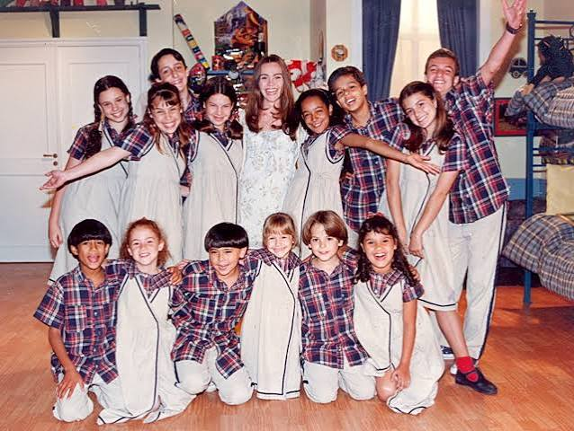

Detalhes técnicos
A segunda temporada de Chiquititas foi exibida de 01 de dezembro de 1997 até 31 de julho de 1998, em 183 capítulos. Adaptada por Caio de Andrade e dirigida por Cláudio Ferrari, em coprodução entre SBT e Telefe. Por causa do sucesso do primeiro CD da trama, o segundo CD demorou alguns meses para ser lançado. Nos primeiros 70 capítulos da temporada, a música de abertura usada foi Remexe, que depois foi substituida por Mexe Lá, presente no segundo CD.
Sinopse

No mesmo momento da morte de Dr. José Ricardo e de Valentina (Neusa Maria Faro), Júnior vai embora com Gabriela para a Suíça, buscando um tratamento para o catatonismo dela. Após isso, Carmen Almeida Campos (Débora Olivieri) vira a dona do orfanato e promete não deixar os órfãos em paz. Como ato de arrependimento, Dr. José Ricardo indica Carolina Correia para a direção do orfanato.
O grave acidente de Daniela deixou ela entre a vida e a morte. O médico responsável por cuidar dela, Dr. Fernando Brausen (Nelson Freitas Jr.) é um homem arrogante que tem muito a aprender com Carolina e as crianças, que posteriormente fazem com que ele se torne um homem brincalhão e divertido. Carolina se aproxima do médico e os dois se apaixonam.
Miguel (Matheus Carrieri), "o mascarado", passa a frequentar os porões do orfanato para investigar sobre sua filha. A sua fiel espiã, a doce Roberta (Cristina Bessa), torna-se funcionária da casa, para conseguir ajudar Miguel na sua busca. Quando mais jovens, Miguel e Dr. Fernando eram grandes amigos, mas um acidente de helicóptero fez Miguel sumir, fazendo com que todos acreditassem em sua morte.
A irmã gêmea malvada de Ernestina, Matilde (ambas interpretadas por Magali Biff), começa a se passar pela irmã e se alia com Carmen Almeida Campos. Ambas começam a agir como cão e gato pelo testamento, que, além da herança milionária, havia o segredo mais perigoso para Carmen: a verdadeira filha de Gabriela.